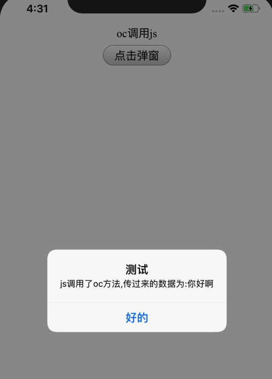

前言
现在很多app都会使用一些h5页面来代替一些要求灵活性的页面,这时候肯定会涉及到一些wkwebview和js交互的问题,写了个小demo以便更好的理解和记住知识点.
该例子思路
通过利用一个简单的弹窗效果展示从H5端利用js发送的数据,和改变H5页面的文字测试iOS调用js的效果从而达到交互的目的
WKWebView与js的交互
JS调用OC
JS调用OC,我们首先需要了解的就是WKScriptMessageHandler,我们通过遵循了这个协议的类来获取网页端传过来的数据
WKScriptMessageHandler
关于WKScriptMessageHandler,我们先看看官方文档的说明
A class conforming to the WKScriptMessageHandler protocol provides a method for receiving messages from JavaScript running in a webpage.
翻译一下就是:WKScriptMessageHandler协议为遵循它的类提供了一个方法来接收在网页端运行的js中的消息.- (void)userContentController:(WKUserContentController *)userContentController didReceiveScriptMessage:(WKScriptMessage *)message;//就是该方法
首先我们要新建一个类遵循WKScriptMessageHandler的协议,并实现上面的那个方法,代码如下1
2
3
4
5
6
7
8
9
10
11
12@interface DSLFGameWebHandler : NSObject <WKScriptMessageHandler>
@end
@implementation DSLFGameWebHandler
- (void)userContentController:(WKUserContentController *)userContentController didReceiveScriptMessage:(WKScriptMessage *)message{
NSString *info = message.body; //网页端传过来的数据在body里面,如果是json数据在这里就需要将其序列化,转成我们想要的格式
[[[UIAlertView alloc] initWithTitle:@"测试" message:[NSString stringWithFormat:@"js调用了oc方法,传过来的数据为:%@",info] delegate:nil cancelButtonTitle:@"好的" otherButtonTitles:nil, nil] show];
}
怎么利用WKScriptMessageHandler去监听呢?在初始化wkwebview的时候配置一下configuration就可以了,不过需要跟网页端设定一个通用的,如下代码设定的就是:
iOS端配置代码1
2
3WKWebViewConfiguration *configuration = [WKWebViewConfiguration new];
[configuration.userContentController addScriptMessageHandler:_webHandler name:@"DSLFTest"];
_webView = [[WKWebView alloc] initWithFrame:CGRectMake(0, 0, UIScreen.mainScreen.bounds.size.width, UIScreen.mainScreen.bounds.size.height) configuration:configuration];
H5端往iOS端发送数据1
2
3
4
5function h5ButtonClicked()
{
//js调用OC
window.webkit.messageHandlers.DSLFTest.postMessage('你好啊');
}
OC调用JS方法
相对而言,这个比较简单,可以直接通过wkwebview的一个方法就可以实现了,代码如下
1 | //iOS端调用代码 |
1 | //H5页面中的js方法 |
demo效果展示
